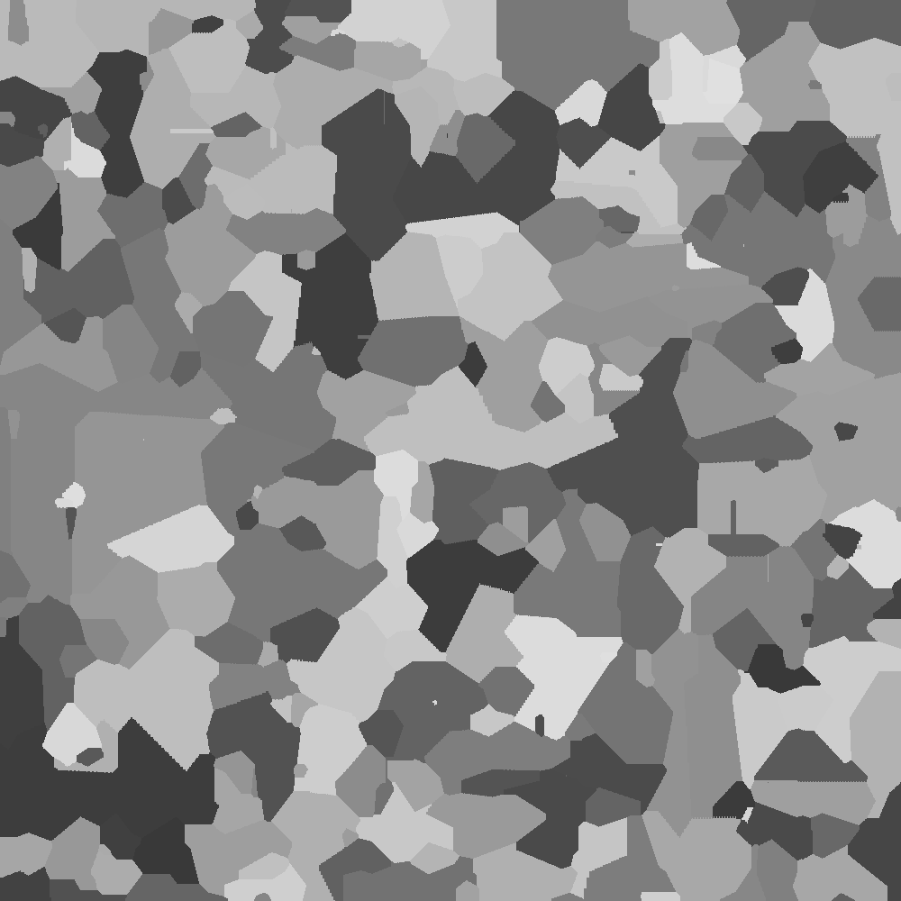

Aufgabe 2 - Verzinkt
Team-ID 00339
Team-Name SilverBean
Bearbeiter der Aufgabe Oskar Stanschus
19. November 2022
1. Lösungsidee
Zur Generierung des Kristallmusters werden zuerst eine beliebige Zahl x an Keimen generiert. Diese werden in einem zweidimensionalen Array abgespeichert. Die Keime werden zufällig in einem definierten Bereich und in einer definierten Anzahl generiert. Daraufhin wird solange iteriert, bis das gesamte Feld voll mit Kristallen ist. Bei jeder Iteration wird durch alle Pixel iteriert und geprüft, ob der Pixel, welcher einen Kristall repräsentiert, bereits gewachsen ist. Ist der Kristall noch nicht gewachsen, wird ein Wachstum für den Kristall ausgelöst. Bei der Generierung der Keime wird jedem Kristall ein Wachstum nach oben, unten, rechts und links zugeteilt. Außerdem wird eine Zeit in Iterationen hinterlegt, nachdem der Keim anfängt zu wachsen, und eine Farbe, welche abhängig von einem generierten Winkel ist.
Die Generierung der Wachstumsgeschwindigkeiten werden durch ursprünglich drei zufällig generierte Werte bestimmt. Diese Werte sind der Wachstumswinkel α, eine Wachstumsrate w und eine Wachstumsrate in die entgegengesetzte Richtung o. Mit Hilfe des Wachstumswinkel werden dann die Wachstumsrichtungen bestimmt. Die Wachstumsrate gibt an, wie schnell der Kristall wächst. Die Wachstumsrate in die entgegengesetzte Richtung gibt an, wie schnell der Kristall in die entgegengesetzte Richtung zum Winkel α wächst. Mithilfe dieser Parameter werden dann ein Wachstum auf der x-Achse und ein Wachstum auf der y-Achse berechnet. Dieses ist in dem Beispielbild zu sehen. Hierbei ist a das Wachstum auf der y-Achse und b das Wachstum auf der x-Achse. Diese Werte werden durch den Wachstumswinkel α bestimmt.
Das Wachstum auf der x-Achse wird über die Formel cos(α) * w berechnet. Das Wachstum auf der y-Achse wird über die Formel sin(α) * w berechnet.
Es gibt also nun ein Wachstum auf der x- sowie y-Achse. Diese werden dann zu einem Wachstum nach oben, unten, rechts und links übersetzt. In diesem aufgeführtem Beispiel ist a das Wachstum nach oben, b das Wachstum nach rechts, c das Wachstum nach unten und d das Wachstum nach links. Die Strecke a, also das Wachstum auf der y-Achse ist im Falle des Beispieles positiv. Das bedeutet, dass das Wachstum nach oben, also a, den Wert Wachstum auf der Y-Achse annimmt. Das Wachstum auf der x-Achse ist ebenfalls positiv, sodass das Wachstum nach rechts, also b , den Wert Wachstum auf der x-Achse annimmt. Nun bleibt noch das Wachstum nach unten und nach links zu bestimmen. Die Strecke c ist die entgegengesetzte Seite zum Wachstumswinkel, sodass hier das Wachstum auf der y-Achse mit dem Faktor von o (Wachstumsrate in die entgegengesetzte Richtung) reduziert wird, also mit der Formel a * o. Das Wachstum nach links ist ebenfalls die entgegengesetzte Seite zum Wachstumswinkel, sodass auch hier das Wachstum auf der x-Achse mit dem Faktor von o reduziert wird.

Nun gibt es eine Wachstumsgeschwindigkeit für jede Richtung. Um den Keim dann Wachsen zu lassen, werden in Richtung nach oben, unten, rechts und links jeweils die Wachstumsstrecken a, b, c und d generiert. Dies wird mit einer einfachen Schleife durchgeführt, welche solange Pixel in die jeweilige Richtung generiert, bis ein Rand erreicht wird, ein Pixel mit einem anderen Kristall kollidiert oder genügend Wachstum für die jeweilige Richtung generiert wurde, also den Wert beispielsweise a erreicht hat.
Diese Prozedur wird so oft ausgeführt, bis das gesamte Feld mit Kristallen gefüllt ist.
Hier ist ein Beispiel für den Beginn einer Generation in einem 20px x 20px großen Feld mit einem Kristall.
 |  |
 |  |
 |  |
 |  |
 |  |
2. Umsetzung
Das Programm wurde in Javascript umgesetzt und wurde nachträglich mit "Prettier" formatiert. Zur einfachen Bedienung habe ich das Script in einer einfachen Website eingebettet, sodass die Parameter sehr leicht geändert werden können. Um das Programm auszuführen muss lediglich die Datei "verzinkt.html" über einen beliebigen Browser geöffnet werden. Auf der Website können dann alle Parameter angepasst werden und dann über den Knopf "Generate" ein Muster generiert werden, welches dann auf der Website nach kurzer Zeit angepasst wird.
3. Beispiele
Die generierten Muster sind nicht reproduzierbar. Um vergleichbare Muster zu generieren, können die Einstellungen unter den Bildern verwendet werden. Alle Beispiele haben die Größe 1000px x 1000px.
Beispiel 1

Anzahl an Keimen: 500 Breite des Spawnbereichs: 1000 Höhe des Spawnbereichs: 1000
Wachstumwinkel: 1 - 360 Wachstumwsgeschwindigkeit: 1 - 5 Wachstum in umgekehrte Richtung: 10 - 30 Wachstumstartzeit: 1 - 5
Beispiel 2

Anzahl an Keimen: 500 Breite des Spawnbereichs: 750 Höhe des Spawnbereichs: 750
Wachstumwinkel: 1 - 360 Wachstumwsgeschwindigkeit: 1 - 5 Wachstum in umgekehrte Richtung: 10 - 30 Wachstumstartzeit: 1 - 5
Beispiel 3

Anzahl an Keimen: 500 Breite des Spawnbereichs: 1000 Höhe des Spawnbereichs: 1000
Wachstumwinkel: 180 - 360 Wachstumwsgeschwindigkeit: 1 - 5 Wachstum in umgekehrte Richtung: 10 - 30 Wachstumstartzeit: 1 - 5
Beispiel 4

Anzahl an Keimen: 500 Breite des Spawnbereichs: 1000 Höhe des Spawnbereichs: 1000
Wachstumwinkel: 1 - 360 Wachstumwsgeschwindigkeit: 1 - 20 Wachstum in umgekehrte Richtung: 10 - 30 Wachstumstartzeit: 1 - 10
Beispiel 5

Anzahl an Keimen: 500 Breite des Spawnbereichs: 1000 Höhe des Spawnbereichs: 1000
Wachstumwinkel: 1 - 360 Wachstumwsgeschwindigkeit: 1 - 5 Wachstum in umgekehrte Richtung: 10 - 30 Wachstumstartzeit: 1 - 60
4. Quellcode
class Generator { filled = 0; constructor(canvas, settings) { this.settings = settings; this.canvas = canvas?.getContext("2d"); (canvas.width = settings.width), (canvas.height = settings.height); this.canvas.clearRect(0, 0, this.settings.width, this.settings.height); this.crystals = new Array(settings.height).fill(0).map((x) => new Array(settings.width).fill(null)); // Kristall-Array erstellen } // Setzt einen Kristall an die angegebene Position, wenn möglich. Gibt true zurück, wenn erfolgreich. async setCrystal(crystalData, position) { if ( !( position.y > this.crystals.length - 1 || position.x > this.crystals[0].length - 1 || position.x < 0 || position.y < 0 ) && (this.crystals[position.y][position.x] == null || this.crystals[position.y][position.x].time > 1) ) { this.crystals[position.y][position.x] = crystalData; this.filled++; // Kristall zeichnen this.canvas.fillStyle = crystalData.color; this.canvas.fillRect(position.y, position.x, 1, 1); return true; } return false; } // Muster generieren async generate() { // Keime generieren for (let i = 0; i < this.settings.spawn.amount; i++) { const position = { x: Generator.randomInt( (this.settings.width - this.settings.spawn.width) / 2, (this.settings.width + this.settings.spawn.width) / 2 - 1 ), y: Generator.randomInt( (this.settings.height - this.settings.spawn.height) / 2, (this.settings.height + this.settings.spawn.height) / 2 - 1 ), }; // Zufällige Position im Spawnbereich const growthValues = { angle: Generator.random(this.settings.growth.angle.min, this.settings.growth.angle.max), // Winkel, in dem der Kristall wächst growthRate: Generator.random(this.settings.growth.rate.min, this.settings.growth.rate.max), // Wachstumsrate (in Kristallen pro Tick) oppositeGrowth: Generator.random(this.settings.growth.opposite.min, this.settings.growth.opposite.max), // Wachstumsrate in die entgegengesetzte Richtung }; const dirGrowth = { x: Generator.notZero(Math.cos(growthValues.angle) * growthValues.growthRate), // Wachstum in x-Richtung y: Generator.notZero(Math.sin(growthValues.angle) * growthValues.growthRate), // Wachstum in y-Richtung }; const pixelGrowth = { up: Math.ceil(Math.abs(dirGrowth.y > 0 ? dirGrowth.y : dirGrowth.y * growthValues.oppositeGrowth)), down: Math.ceil(Math.abs(dirGrowth.y < 0 ? dirGrowth.y : dirGrowth.y * growthValues.oppositeGrowth)), left: Math.ceil(Math.abs(dirGrowth.x < 0 ? dirGrowth.x : dirGrowth.x * growthValues.oppositeGrowth)), right: Math.ceil(Math.abs(dirGrowth.x > 0 ? dirGrowth.x : dirGrowth.x * growthValues.oppositeGrowth)), }; // Wachstum in Pixeln übersetzt mit Wachstumsrate in entgegengesetzter Richtung const color = `rgb(${Math.floor(55 + (growthValues.angle / 360) * 170)}, ${Math.floor( 55 + (growthValues.angle / 360) * 170 )}, ${Math.floor(55 + (growthValues.angle / 360) * 170)})`; // Farbe des Kristalls aus dem Winkel berechnen if ( !this.setCrystal( { growth: pixelGrowth, color: color, time: Generator.randomInt(this.settings.growth.time.min, this.settings.growth.time.max), }, position ) ) i--; } // Wachstum der Kristalle while (this.filled < this.settings.width * this.settings.height) { const tempCrystals = Generator.deepCopy(this.crystals); this.settings.update?.(this.filled / (this.settings.width * this.settings.height)); // Anzeige im Browser aktualisieren, falls vorhanden for (let y = 0; y < this.crystals.length; y++) for (let x = 0; x < this.crystals[0].length; x++) { if (tempCrystals[y][x] == null) continue; let crystal = this.crystals[y][x]; if (crystal == null || crystal.time-- > 0 || crystal.grew) continue; // Wachstum nach oben, unten, links und rechts for (let i = 1; i < crystal.growth.up + 1; i++) if (!this.setCrystal(Generator.deepCopy(crystal), { x: x, y: y - i })) break; for (let i = 1; i < crystal.growth.down + 1; i++) if (!this.setCrystal(Generator.deepCopy(crystal), { x: x, y: y + i })) break; for (let i = 1; i < crystal.growth.left + 1; i++) if (!this.setCrystal(Generator.deepCopy(crystal), { x: x - i, y: y })) break; for (let i = 1; i < crystal.growth.right + 1; i++) if (!this.setCrystal(Generator.deepCopy(crystal), { x: x + i, y: y })) break; crystal.grew = true; } await new Promise((resolve) => setTimeout(resolve, 0)); // Warten, damit der Browser nicht einfriert } } static notZero = (value) => (Math.ceil(Math.abs(value)) * value) / Math.abs(value); // Rundung für Werte, die nicht 0 sein dürfen static random = (min, max) => Math.random() * (max - min) + min; // Zufallszahl zwischen min und max static randomInt = (min, max) => Math.floor(Math.random() * (max - min + 1) + min); // Zufällige Ganzzahl zwischen min und max static deepCopy = (element) => JSON.parse(JSON.stringify(element)); // Kopieren eines Objektes ohne Referenz}